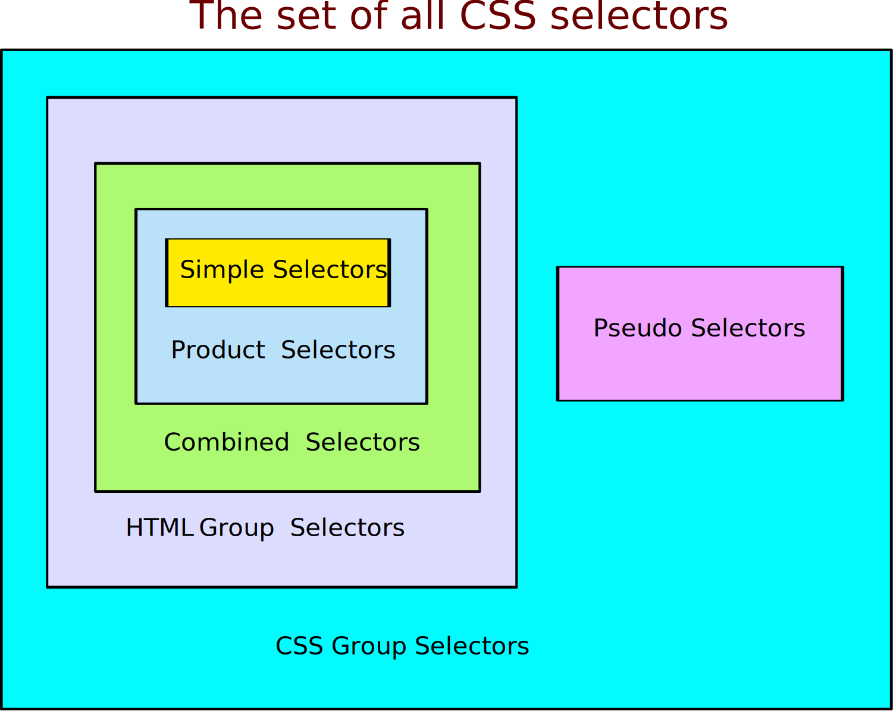

W3 not run by cats, so W'3s C'sS's materials needs go0d's edit's.
Meouzer
Meouzer
W3 not run by cats, so W'3s C'sS's materials needs go0d's edit's.
Meouzer
A diagram and table below provide a quick overview of CSS selectors.
| CSS Selectors | |||
|---|---|---|---|
| Category | Selector | Description | Restrictions |
| Simple Selectors | lots | See Simple Selectors | Must be officially Recognized by W3 |
| Product Selectors | xyz | Elements that are elements of x, y, and z simultaneously | x, y, z are simple selectors |
| Combined Selectors | X Y | Y elements that descend from some X element | X and Y are product selectors |
| X > Y | Y elements that are a child of some X element | ||
| X ~ Y | Y elements that are a subsequent sibling some X element | ||
| X + Y | Y elements that are the very next sibling of some X element | ||
| Group Selectors (= all HTML Selectors) | A, B, C | Elements that are members of at least one of A, B, and C | A, B, and C are combined selectors |
| Pseudo Selectors | Xp | An abstract part of X depending on p | X is a combined Selector and p a pseudo element |
| CSS Selectors | E, F, G | Elements that are members of at least one of E, F, and G | E, F, G are combined selectors or pseudo selectors |
This article is based solely on original W3 source material at http://www.w3.org/TR/css3-selectors/.
A HTML selector is a formal expression, algebraic in nature, that represents the set/class of HTML elements that meet the criteria specified by the expression.
If G is an HTML selector and g is an HTML element, then by definition all the following mean the same.
The one the author likes the best is the first because it leads to the least awkward terminology for describing complex selectors.
As we shall see the criteria for the selector div.myclass is that an element must be a div with class myclass. So its class, the set of elements that it represents, is the set of all divs with class myclass. Note that description of the criteria and the description its class are pretty much the same: so either may be used to describe the selector.
Now we give an overview of the different types of selector. ⊂ represents the inclusion symbol.
Simple Selectors ⊂ Product Selectors ⊂ Combined Selectors ⊂ HTML Group Selectors = All HTML Selectors ⊂ CSS group selectors = CSS Selectors
So all simple selectors are product selectors. All product selectors are combined selectors. All combined selectors are group selectors. The HTML group selectors form the set of all HTML selectors. All HTML group selectors are CSS group selectors.
For future reference keep in mind that
The next table lists all simple selectors in the third column and categorizes them in the first column. The second column either gives the name of the selector, or in the case of a parameterized selector, the subcategory. The name or subcategory includes the word selector, which we had to leave out for brevity. So for example:
| Simple Selectors | |||
|---|---|---|---|
| Category | Name or Subcategory | Selector | Criteria for an HTML element. |
| Initial Selectors | Universal | * | None (so selects all html elements) |
| Type | E | has type E (E = p, div, span, etc.) | |
| ID | ID | #myid | has an id equal to myid |
| Class | Class | .myclass | has class myclass |
| Attribute Selectors | Presence | [foo] | has attribute foo |
| Value1 | [foo=bar] | has attribute foo with value bar | |
| Starting | [foo^="bar"] | has attribute foo whose value starts with bar. | |
| Ending | [foo^="bar"] | has attribute foo whose value ends with bar. | |
| Word2 | [foo~="bar"] | has attribute foo whose value contains word bar | |
| Substring | [foo*="bar"] | has attribute foo with substring bar in value | |
| First Hyphenated Token3 | [foo|="bar"] | has attribute foo and first hyphenated token bar | |
| Structural Pseudo Classes | Root4 | :root | is the sole root element <html> |
| Nth-Child5 | :nth-child(k) | is a kth child (the kth child in its parent) | |
| Nth to Last Child5 | :nth-last-child(k) | is a kth to last child | |
| Nth of Type5 | :nth-of-type(k) | is a kth child of its type (in its parent) | |
| Nth last of Type5 | :nth-last-of-type(k) | is a kth to last child of its type | |
| First Child | :first-child | is a first child | |
| Last Child | :last-child | is a last child | |
| First of Type | :first-of-type | is a first child of its type | |
| Last of Type | :last-of-type | is the last child of its type | |
| Only Child | :only-child | is an only child | |
| Only of Type | :only-of-type | is an only child of its type | |
| Empty | :empty | has no children including text nodes | |
| Link Pseudo Classes | Link | :link | is an unvisited links |
| Visited | :visited | is a visited link | |
| User Action Pseudo Classes | Active6 | :active | is currently active |
| Hover7 | :hover | is currently in the hovered state. | |
| Focus8 | :focus | currently has the focus | |
| Negation Pseudo Class | Negation | :nots(s) | does not match the simple selector s |
| Target Pseudo Class | Target | :target | is the target of a link |
| Lang Pseudo Class | Language | :lang(fr) | has language "fr" |
| UI State Pseudo Classes | Enabled | :enabled | is currently enabled |
| Disabled | :disabled | is currently in the disabled state | |
| Checked | :checked | is currently checked | |
Also k can be a formula an + b where a and b are specified integers and where the exact letter n is used as a variable non-negative integer. To find out what's matched just determine the positive values of an + b to use as the index k.
The second and third columns below give examples and should be read independently.
| Examples of Formulas in Selectors (use n = 0, 1, 2, ... to obtain indices) | ||
|---|---|---|
| Index Formula | 2n + 1 | -2n + 6 |
| n | 0, 1, 2, 3, ... | 0, 1, 2, 3, ... |
| Positive Indices | 1, 3, 5, 7, ... | 6, 4, 2, 0, -2, ... (strike out zero and negative indices) |
| Selector |
:nth-child(2n + 1) matches all first, third, fifth, etc. children |
:nth-child(-2n + 6) matches all sixth, fourth and second children |
| Selector |
:nth-last-child(2n+1) matches all last, third to last, fifth to last, etc. children |
:nth-last-child(-2n+6) matches all sixth to last, fourth to last, and second to last children |
| Selector |
:nth-of-type(2n + 1) matches all first, third, fifth, etc. children of their type |
:nth-of-type(-2n + 6) matches all sixth, fourth, and second children of their type |
| Selector |
:nth-last-of-type(2n + 1) matches all last, third to last, fifth to last, etc. children of their type |
:nth-last-of-type(-2n + 6) matches all sixth to last, fourth to last, and second to last children of their type |
To review, if x, y, and z are selectors the concatenation xyz is a selector. Since this looks like formal algebraic multiplication, xyz is called a product selector. It has three factors x, y, and z. It could also be called the intersection selector because it selects elements that are simultaneously in all three factors.
Product selector is definitely briefer that W3's awkward terminology sequence of simple selectors, which doesn't even suggest that the result is a selector or even an intersection.
Consider the product selector whose factors are :first-child, :hover, #mydiv, and .myclass. We can obtain the product selector by concatenating these four factors in twenty-four ways, but we show only three.
All three concatenations represent the same product or intersection. This product matches all elements that are a first child, are of the class myclass, are being hovered on, and have id #myid.
We can prepend a type selector like div as the first factor, and again an intersection is represented.
All three product selectors are identical because each represents the HTML collection of all divs that are a first child, are of the class myclass, are being hovered on, and have id #myid.
One of the rules of product selectors is that if the universal selector or a type selector is a factor, it must be listed as the first factor. Except for this caveat, order of factors isn't important.
The following table is review. A description of the set of element represented is given. You might try and give the criteria. For example the descendant selector criteria is that an element must be an F element that is a descendant of some E element.
| Combined Selectors (E is a combined selector, F is a product selector) | |||
|---|---|---|---|
| Combinator Name | Combinator | Combined Selector | Matching HTML Collection |
| Descendant | (white space) | E F | All F elements that are descendants of E elements |
| Child | > | E > F | All F elements that are children of E elements |
| Adjacent Sibling | + | E + F | All F elements that are the very next sibling of an E element |
| General Sibling | ~ | E ~ F | All F elements that are a following sibling of an E element |
Combined selectors are obtained from product selectors by applying combinators. Write out a sequence of product selectors and write combinators in-between. The combinators are space as descendant combinator > as child combinator, + as adjacent sibling combinator, and ~ as general sibling combinator. OK! Here's a list of product selectors.
Write these out in order and place the combinators space and > in-between the first two and last two respectively. You get the combined selector.
div:first-child span[foo="bar"]:only-child > var.myclassTo interpret this, you always work backwards.
This combined selector selects any element that is a var with class myclass that is a child of an only child span that has a foo attribute whose value is "bar" that is in turn a descendent of a div that is the first child in its parent.
To understand spacing, the descendent combinator is a space, but you can have white space around it. Likewise the other combinators can have more white space around them.
The reader should keep in mind that Adjacent Sibling and General Sibling are oxymoronic. Proper language dictates that a general sibling could be any sibling previous or subsequent, while an adjacent sibling could also be previous or subsequent. Lets emphasize that only subsequent siblings are allowed by these two combinators. These two terms are officially standardized and so can't be changed to proper terms such as next sibling or following sibling.
It's a hole is CSS that you can't access previous siblings.
A HTML group selector is formally, a comma separated list of combined selectors. It represents the union or grouping of the individual combined selectors. That's it and there isn't anything more to say. However, meouzer as a Siamese is rather talkative. If x, y, and z are combined selectors (which includes product selectors and simple selectors). then x, y, z is a group selector. It represents the union of the three combined selectors. It's criteria is that an element must lie in at least one of the three.
div, span, var is the selector that corresponds to the HTML collection of all divs, spans, and vars.
Lets look at the group selector for proper combined selectors.
Logical portions of the web page that can't be accessed by the DOM are called abstract elements.
Officially a pseudo element is a formal notation whose name stands for a type of abstract element. For example, ::first-line is a pseudo element that stands for first lines. By appending this particular pseudo element to the end of a combined HTML selector E, we obtain a pattern E::fist-line, called a pseudo selector, that matches all first lines of elements of E.
A pseudo selector is the concatenation of an HTML combined selector with a pseudo element.
| Pseudo Elements and Pseudo Selectors (E is a combined HTML selector) | ||
|---|---|---|
| Pseudo Element | Pseudo Selector | Selection Criteria for Abstract Elements |
| ::first-line | E::first-line | is the first line of some E element |
| ::first-letter | E::first-letter | is the first letter of some E element |
| ::before | E::before | is generated content at the start of an E element's innerHTML |
| ::after | E::after | is generated content at the end some E element's innerHTML |
Single colons can also be used, which is best because some modern browsers don't recognize the double semicolon.
Let's take the combined selector div:last-child > span and append the pseudo element :first-line to get. div:last-child > p:first-line
This is the pseudo selector that selects all first lines of paragraphs that are a child of a div that is a last child.
Let's take a look at :before. The style div:before{content:"Insert at beginning of Every Div "} will insert the string "Insert at beginning of Every Div " at the start of every div's innerHTML.
The grouping of any number of HTML combined selectors and pseudo selectors is called a CSS group selector. It represents the union of the individual selectors: all the elements that meet the criteria of at least one of the individual selectors. The CSS group selectors form the set of all CSS selectors as displayed in the following diagram.
It just remains to give examples of proper CSS selectors. Homogeneous means alike in some sense. Combined selectors are like other combined selectors, and pseudo selectors are like other pseudo selectors, but combined selectors and pseudo selectors are not like each other.
All the following are CSS selectors.
Of course in the place of the div, span, and var we could have used combined HTML selectors of any complexity.
Most likely because W3 is so haphazard, people get pseudo classes, pseudo elements, and pseudo selectors confused with each other. Even W3 and MDN get confused.
We have already seen the pseudo classes such as :fisrt-child in the Simple Selectors section.
W3 Pseudo Classes. The pseudo-class concept is introduced to permit selection based on information that lies outside of the document tree or that cannot be expressed using the other simple selectors.
This quote is blatantly false. According to it the pseudo class and simple selector :first-child is based on information outside the document tree. Wrong! No information outside the document tree describes its selection/criteria. It's only by examining the document tree that you can tell whether a element is a first child or not.
Now let's see how MDN goes off the deep end.
A CSS pseudo-class is a keyword added to a selector that specifies a special state of the selected element(s). For example, :hover can be used to change a button's color when the user's pointer hovers over it.
Mozilla Developer Network
Again recall that :first-chld is a pseudo class. That an element is a first child really can't be considered to be a state of the element and certainly not any more than the attribute selectors. That I am a first child has nothing to do with my state. The fact that I have brown hair does have something to do with my state.
The quote messes up again by suggesting that :first-child is not a selector: it's just a keyword added to an actual selector. Wrong!
The only thing you can say about the pseudo classes is that they are the simple selectors left over after you consider the universal selector, the type selectors, and the attribute selectors. You can't give a simple independent description of this: at least no one has.
Another thing is to realize is that pseudo selectors arise from pseudo elements and so are closely related but not the same. Furthermore, pseudo classes are something else. All pseudo classes are listed in the Simple Selectors table.